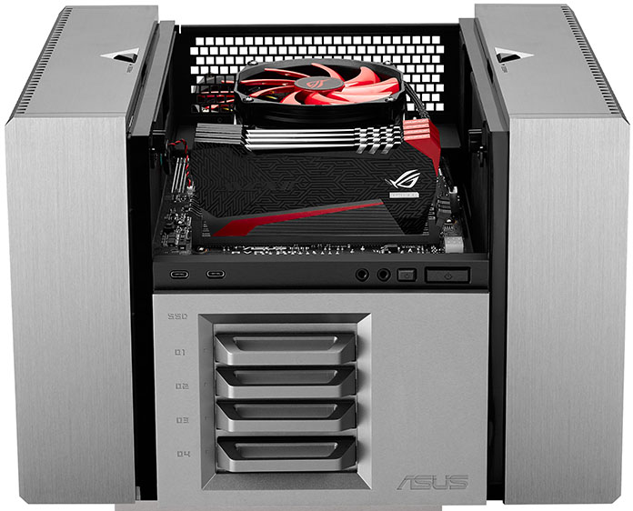
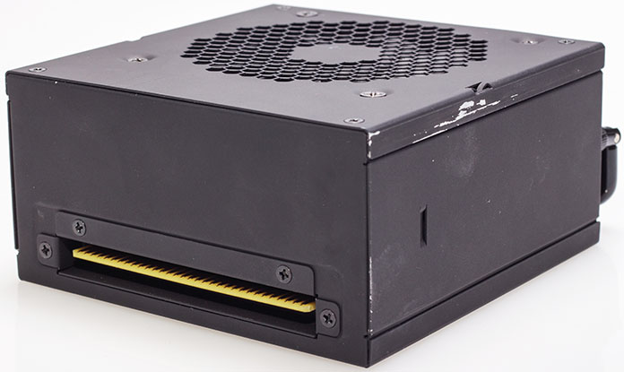
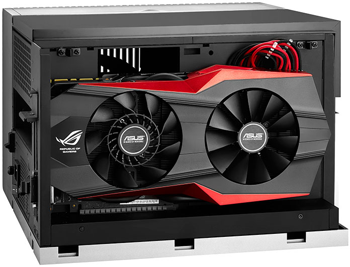
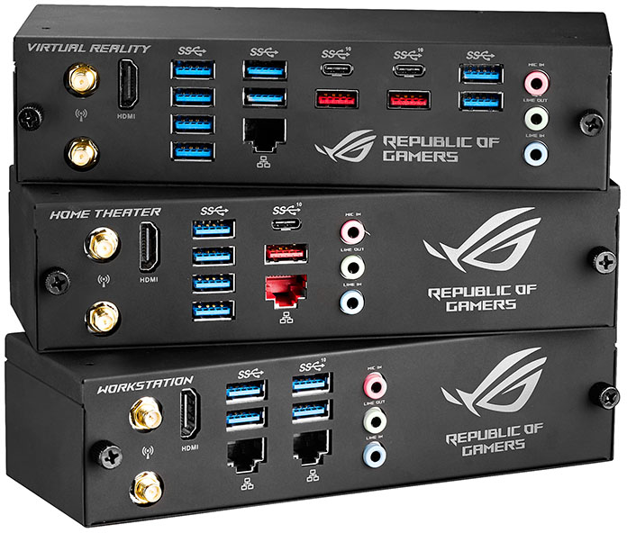
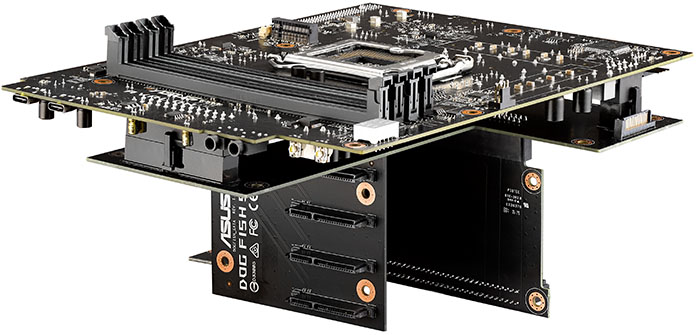

С незапамятных времён процесс сборки компьютера остаётся довольно сложной для обычных пользователей задачей: мало того что необходимо учитывать множество факторов, влияющих на сборку, так ещё и есть риск что-то сломать, где-то не туда воткнуть, а иногда и не там намазать. Поэтому человек, не очень сведущий в таких вопросах, обычно либо обращается за помощью к специалистам, либо берёт готовое. Некоторые же собирают сами, а потом обращаются в сервисный центр по месту жительства и тут же платят сверху за ремонт. А зачем, спрашивается, напрягаться, если можно сразу купить готовое решение, которое если и потребует каких-то доработок, то заменить компонент пользователь сможет самостоятельно, не прибегая к помощи профессионалов и не рискуя при этом что-то сломать?
В Asus решили облегчить жизнь геймерам и собираются выпустить модульный ПК ROG Avalon, который всё умеет. Новинку продемонстрировали на азиатской IT-выставке Computex 2016. Вообще-то, компьютер не совсем модульный, ведь проприетарную материнскую плату заменить будет сложно — она является неотъемлемой частью самой конструкции. Блок питания тоже хорош, но и его заменить не так просто — в ROG Avalon он заезжает на своё место по специальным салазкам, а провода, идущие от него к остальным элементам компьютера, заботливо проложены по специальным кабель-каналам прямо на заводе производителя. Да, водяное охлаждение тоже идёт на борту и встроено оно намертво.
«Модульность так себе» — скажет искушённый в апгрейдах геймер. Зато поменять в таком компьютере процессор или оперативную память — раз плюнуть: потяните верхнюю крышку, достаньте старые компоненты и просто поставьте новые. И не надо ничего развинчивать и бояться сломать, конструкция специально создана для быстрой замены практически «на лету». Ниже расположен отсек для 2,5-дюймовых дисков, которые просто и легко встают на своё место. Да, отсеки для них тоже оборудованы салазками. Левая сторона корпуса отделена под видеокарту. Там есть достаточно места для того, чтобы «видюха» не задохнулась и не перегрелась от жары, вырабатываемой другими компонентами.
Ещё одна интересная особенность системника от Asus — сменные задние панели, которые позволяют выбрать наиболее подходящие и нужные пользователю разъёмы, поэтому владелец не ограничен в их выборе, как в случае с обычной материнской платой. Нужны два гигабитных порта? Берётся нужная плашка и ставится — оба порта на месте. Больше USB-портов? Пожалуйста. Есть и такая. Есть три на выбор: Workstation, Home Theater и Virtual Reality.
Концепция явно перспективная, но отсутствие возможности заменить материнскую плату удручает. Процессоры менять можно будет довольно долго, а потом в продаже появится новый процессор на более современном сокете и всё, придётся покупать новый Avalon. Собственно, на это и расчёт. Зато круто выглядит, а замена комплектующих представляется не таким муторным, как раньше, занятием.
